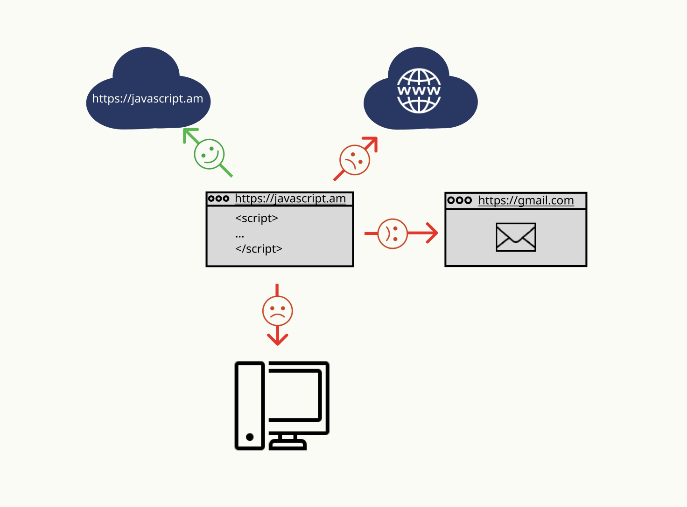

JavaScript-ի ներածություն
Եկեք տեսնենք, ինչ յուրահատկություններ կան JavaScript-ում, ինչ կարող ենք անել դրա օգնությամբ և ինչ այլ տեխնոլոգիաններ կարող են աշխատել JAvaScript-ի հետ։
Ինչ է JavaScript-ը
Ի սկզբանե JavaScript-ը ստեղծվել էր client-side scripting language, որը նախատեսված էր մեր վեբ կայքերը ավելի ինտերակտիվ դարձնելու համար։
Այս լեզվով գրված ծրագրերը կոչվում են script: Այն կարելի է գրել անմիջապես HTML-կոդում։ Բրաուզերը հեշտությամբ կարողանում է կարդալ JavaScript կոդը։
Այս առումով JavaScript-ը շատ տարբերվում է Java կոչվող մեկ այլ լեզվից:
Ինչու՞ է այն կոչվում Java Script
Երբ ստեղծվել է JavaScript-ը,այն ի սկզբանե ունեցել է մեկ այլ անվանում՝ <<LiveScript>>: Բայց այդ ժամանակ Java-ն եղել է շատ հայտնի, այդ իսկ պատճառով որոշվել է, որ նոր լեզուն որպես Java-ի «փոքր եղբայր» անվանելը կօգնի:
Բայց քանի որ JavaScript-ը զարգանում էր, այն դարձավ ամբողջովին անկախ լեզու՝ իր յուրահատկությամբ, որը կոչվում է ECMAScript, և այժմ ընդհանրապես կապ չունի Java-ի հետ:
Այսօր JavaScript-ը կարող է իրականացվել ոչ միայն բրաուզերում, այլ նաև սերվերի վրա կամ ցանկացած սարքի վրա, որտեղ տեղադրված է հատուկ ծրագիր, որը կոչվում է JavaScript շարժիչ (
the JavaScript engine):
Բրաուզերն ունի ներկառուցված շարժիչ, որը երբեմն կոչվում է «JavaScript վիրտուալ մեքենա»:
Տարբեր շարժիչներ ունեն տարբեր «կոդային անուններ»: Օրինակ`
- V8 - Chrome-ում, Opera-ում, Edge-ում
- SpiderMonkey - FireFox-ում
- ...Կան այլ ծածկանուններ, ինչպիսիք են «Chakra» IE-ի համար, «JavaScriptCore», «Nitro» և «SquirrelFish» Safari-ի համար և այլն:
Վերոնշյալ տերմինները օգտակար է հիշել, քանի որ դրանք օգտագործվում են ծրագրավորողների հոդվածներում ինտերնետում: Մենք էլ դրանք կօգտագործենք։ Օրինակ, եթե «X ֆունկցիան աջակցվում է V8-ի կողմից», ապա այն հավանաբար աշխատում է Chrome-ում, Opera-ում և Edge-ում:
Շարժիչը կիրառում է օպտիմալացումներ գործընթացի յուրաքանչյուր փուլում: Այն նույնիսկ դիտարկում է կոմպիլացված script-ի կատարումը, վերլուծում է դրա միջով անցնող տվյալները և հետագայում օպտիմիզացնում է մեքենայի կոդը՝ հիմնվելով այդ ամենի վրա։
Ինչպե՞ս են աշխատում շարժիչները:
Շարժիչները բարդ են. Բայց հիմունքները պարզ են.
- Շարժիչը (ներկառուցված, եթե դա բրաուզեր է) կարդում է («վերլուծում») script-ը,
- Այնուհետև այն փոխակերպում է («կազմում») script մեքենայի կոդի,
- Եվ հետո մեքենայի կոդը բավականին արագ աշխատում է,
Ի՞նչ կարող է անել բրաուզերում ներկառուցված JavaScript-ը
Ժամանակակից JavaScript-ը «անվտանգ» ծրագրավորման լեզու է: Այն չի ապահովում ցածր մակարդակի հիշողություն կամ պրոցեսորի հասանելիություն, քանի որ այն ի սկզբանե ստեղծվել է բրաուզերների համար, որոնք դա չեն պահանջում:
JavaScript-ի հնարավորությունները մեծապես կախված են այն միջավայրից, որտեղ այն աշխատում է: Օրինակ, Node.js-ն աջակցում է գործառույթներ, որոնք թույլ են տալիս JavaScript-ին կարդալ/գրել կամայական ֆայլեր, կատարել ցանցային հարցումներ և այլն:
Բրաուզերում JavaScript-ը կարող է անել ամեն ինչ՝ կապված վեբ էջերի մանիպուլյացիայի, օգտագործողի և վեբ սերվերի հետ շփվելու հետ:
Օրինակ, բրաուզերում ներկառուցված JavaScript-ը կարող է.
Էջին ավելացնել նոր HTML, փոխել առկա բովանդակությունը, փոխել style-ը:
Ստանալ և տեղադրել cookie-ներ, հարցեր տալ այցելուներին, ցուցադրել հաղորդագրություններ:
Հիշել օգտատիրոջ տվյալները («ժամանակավոր պահեստավորմամբ»):
Ցանցով հարցումներ ուղարկել հեռավոր սերվերներին, վերբեռնել և ներբեռնել ֆայլեր (այսպես կոչված AJAX և COMET տեխնոլոգիաներ):
Արձագանքել օգտատիրոջ գործողություններին, մկնիկի սեղմումներին, ցուցիչի շարժումներին, ստեղնաշարի հարվածներին:
Ի՞նչ ՉԻ ԿԱՐՈՂ անել բրաուզերում ներկառուցված JavaScript-ը
Բրաուզերում JavaScript-ի հնարավորությունները սահմանափակ են՝ օգտատիրոջ անվտանգությունն ապահովելու համար: Նպատակն է կանխել վնասակար վեբ էջի մուտքը մասնավոր տեղեկատվության կամ վնաս հասցնելու օգտատերերի տվյալներին:
Նման սահմանափակումների օրինակները ներառում են.
Վեբ էջի JavaScript-ը չի կարող կամայական ֆայլեր կարդալ/գրել կոշտ սկավառակի վրա, պատճենել դրանք կամ ծրագրեր իրականացնել: Այն չունի անմիջական մուտք դեպի ՕՀ(օպերացիոն համակարգ)-ի գործառույթներ:
Ժամանակակից բրաուզերները թույլ են տալիս JS-ին աշխատել ֆայլերի հետ, սակայն մուտքը սահմանափակ է և տրամադրվում է միայն այն դեպքում, երբ օգտատերը որոշակի գործողություններ կատարի, օրինակ՝
ֆայլը «գցելով» բրաուզերի պատուհանը կամ ընտրելով այն՝ օգտագործելով <<input>> թեգը:
Գոյություն ունեն տեսախցիկի/խոսափողի և այլ սարքերի հետ փոխազդելու եղանակներ, սակայն դրանք պահանջում են օգտատիրոջ հստակ ույլտվություն: Այսպիսով, JavaScript-ով միացված էջը չի կարող գաղտնի կերպով միացնել վեբ-տեսախցիկը, վերահսկել դրա շրջակայքը և տեղեկատվություն ուղարկել NSA-ին:
Տարբեր ներդիրներ/պատուհաններ ընդհանրապես չգիտեն միմյանց մասին: Երբեմն, օրինակ, երբ մի պատուհան օգտագործում է JavaScript-ը՝ մյուսը բացելու համար: Բայց նույնիսկ այն դեպքում, JavaScript-ը մի էջից կարող է չկարողանալ մուտք գործել մեկ այլ էջ, եթե դրանք գալիս են տարբեր կայքերից (այլ դոմենից, արձանագրությունից կամ պորտից):
Սա կոչվում է նույն ծագման քաղաքականություն: Այս խնդիրը շրջանցելու համար երկու էջերն էլ պետք է համաձայնեն տվյալների փոխանակմանը և պարունակեն հատուկ JavaScript կոդ, որը կարգավորում է դրանք: Մենք այս թեմային կանդրադառնանք ձեռնարկում:
Այս սահմանափակումը, կրկին, ստեղծված է օգտագործողի անվտանգության համար: Էջը, որը օգտատերը բացել է http://anysite.com-ից, չպետք է կարողանա, http://gmail.com օրինակ, մուտք գործել բրաուզերի մեկ այլ ներդիր URL-ով և այնտեղից տեղեկություն գողանալ։
JavaScript-ը կարող է հեշտությամբ հաղորդակցվել ցանցի միջոցով այն սերվերի հետ, որտեղից եկել է ընթացիկ էջը: Բայց այլ կայքերից/տիրույթներից տվյալներ ստանալու նրա հնարավորությունը սահմանափակ է: Թեև դա հնարավոր է, այն պահանջում է բացահայտ համաձայնություն (HTTP) մյուս կողմից: Եվս մեկ անգամ սա անվտանգության սահմանափակում է:

Ի՞նչն է JavaScript-ին դարձնում յուրահատուկ
Նման սահմանափակումները չեն կիրառվում, եթե JavaScript-ն օգտագործվում է բրաուզերից դուրս, օրինակ՝ սերվերի վրա: Ժամանակակից բրաուզերները տրամադրում են պլագիններ/ընդլայնումներ, որոնք թույլ են տալիս պահանջել լրացուցիչ թույլտվություններ`
Ամբողջական ինտեգրում HTML/CSS-ի հետ:
Թույլ է տալիս վեբ հավելվածներն դարձնել ավելի դինամիկ
Բոլոր հիմնական բրաուզերների կողմից միացված է լռելյայն(default):
JavaScript-ի վրա հիմնված լեզուներ
Քանի որ բրաուզերն անմիջական կապ ունի միայն JavaScriptի հետ, բայց երբեմն պետք է լինում այլ լեզուների կիրառություն, վերջերս շատ նոր լեզուներ են հայտնվել, որոնք փոխակերպվում են JavaScript-ի, նախքան բրաուզերում գործարկվելը:
Նման լեզուների օրինակներ.
TypeScript

Այն ներկայացնում է ավելի կարճ syntax՝ թույլ տալով մեզ գրել ավելի հստակ և ճշգրիտ կոդ: Սովորաբար Ruby մշակողներին դուր են գալիս:
Այն կենտրոնացած է «խիստ տվյալների մուտքագրում» ավելացնելու վրա՝ բարդ համակարգերի մշակումն ու սպասարկումը պարզեցնելու համար: Այն մշակվել է Microsoft-ի կողմից:
Այն ինքնուրույն լեզու է, որն ունի իր սեփական շարժիչը(движок), այն աշխատում է ոչ բրաուզերային միջավայրերում (օրինակ՝ բջջային հավելվածներում), բայց կարող է նաև փոխակերպվել JavaScript-ում: Մշակված է Google-ի կողմից:
ժամանակակից, հակիրճ և ապահով ծրագրավորման լեզու է, որը նախատեսված է բրաուզերի կամ Node-ի համար:
Ամփոփում
JavaScript-ը ի սկզբանե ստեղծվել է որպես զննարկիչի համար նախատեսված լեզու, սակայն այժմ այն օգտագործվում է շատ այլ միջավայրերում:
Այսօր JavaScript-ը եզակի դիրք է գրավում որպես դիտարկիչի ամենատարածված լեզու, որը լիովին ինտեգրված է HTML/CSS-ին:
Կան բազմաթիվ լեզուներ, որոնք «տրանսպիլացված» են JavaScript-ի մեջ և ապահովում են հատուկ գործառույթ: Խորհուրդ է տրվում ուսումնասիրել դրանք JavaScript-ին տիրապետելուց հետո:

.png)


Գրելուց առաջ...